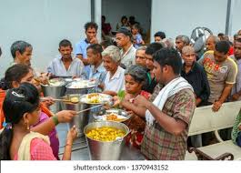
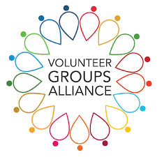
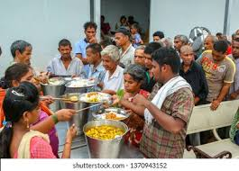
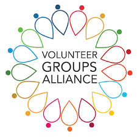

How to Reduce Food Waste in Your Restaurant
Read about the best practices for reducing food waste...
Connecting restaurants with NGOs and individuals to reduce food waste and hunger.
Restaurants donate surplus food.

NGOs and individuals in need request food.
Volunteers pick up and deliver food to those in need.
"This platform has helped us feed so many people!" - NGO Partner
"It's great to see our surplus food being put to good use!" - Restaurant Owner
 



Sign up as a restaurant, NGO, or volunteer.
Read about the best practices for reducing food waste...
Learn how we helped feed thousands by rescuing food...